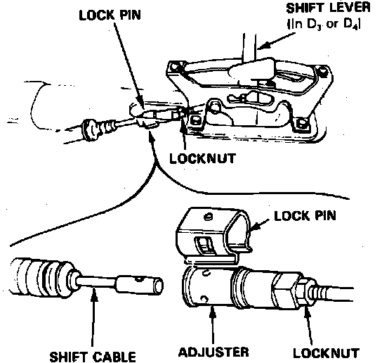

Shift Cable: Adjustments
Fig. 7 Shift Cable Adjustment:

1. Disable coded theft protection system as described in Accessories and Optional Equipment / Antitheft and Alarm Systems / Service and Repair.
2. On models equipped with airbag, disable airbag system as described in Air Bags and Seat Belts / Air Bags (Supplemental Restraint Systems) / Airbag System Disarming.
3. With engine off, remove console.
4. Position shift lever to Drive on Integra models, or Reverse on Legend models, then remove lockpin from cable adjuster, Fig. 7.
3. Ensure hole in adjuster is perfectly aligned with hole in shift cable.
4. If holes are not aligned, loosen locknut on shift cable and adjust as necessary. There are two holes in the end of the shift cable positioned 90° apart to allow for small adjustments.
5. Tighten locknut, then install lockpin on adjuster. If lockpin binds during installation, cable is still out of adjustment.
6. Start engine and check shift lever in all gears. If any gear does not work, refer to Transmission and Drivetrain / Automatic Transmission/Transaxle / Testing and Inspection / Procedures.